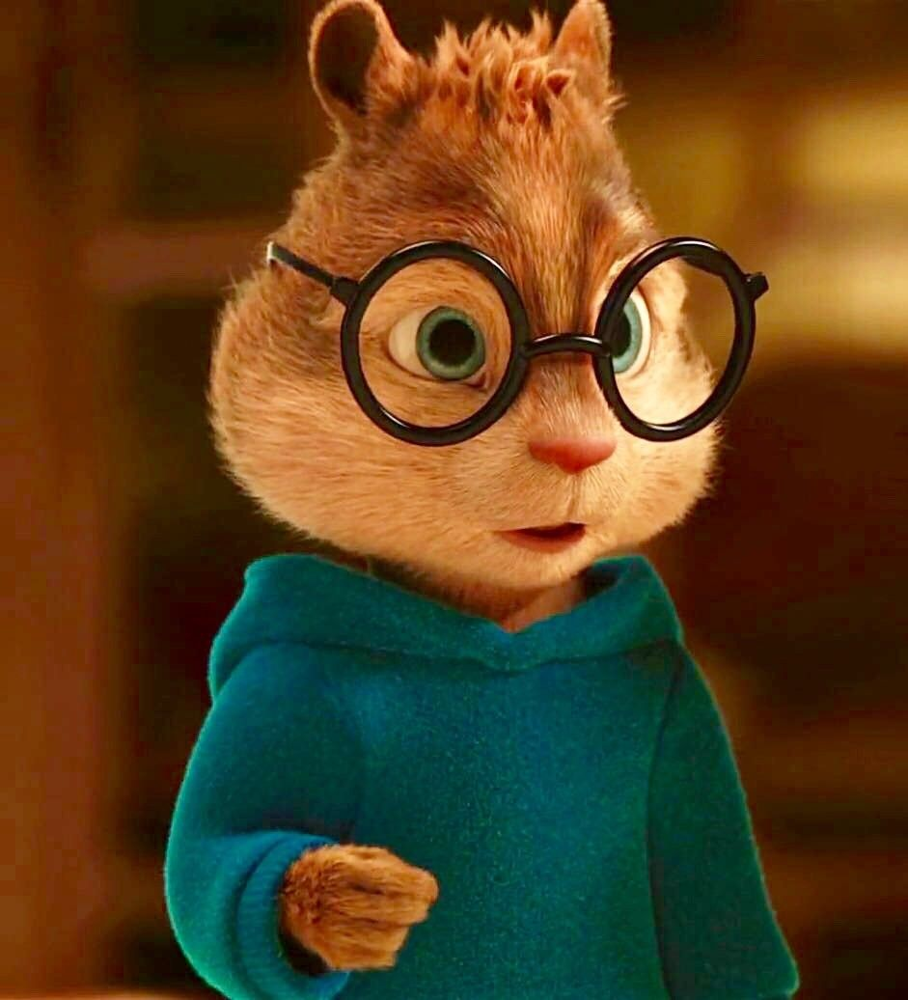

Sobre mim
Aqui está um pouco sobre mim

Me chamo Victor Mark
-
Sou um entusiasta fullstack-developer de 17 anos.
Minha paixão pela programação me levou a dominar uma variedade de linguagens,
incluindo C, C++, Python, PHP, HTML/CSS, Java, JavaScript, TypeScript, Shell,
Lua e Pawn.
-
Além da programação, tenho interesse em desenvolvimento web, programação competitiva e automação.
Estou sempre em busca de oportunidades para aprender e colaborar com outros desenvolvedores,
acreditando na importância da colaboração para avanços tecnológicos.
Projetos participados
Aqui estão alguns projetos em que atuei como desenvolvedor.